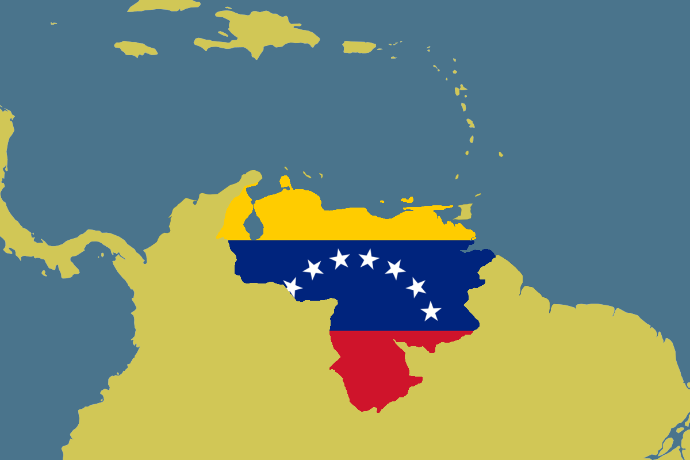

Venezuela

https://socialistvoice.ie/wp-content/uploads/2018/03/venezuela_geo_flag2.png
A Venezuela é um país situado na América do Sul fazendo divisas com o Brasil, Colômbia e Guiana. Constituído por uma parte no continente e um grande número de ilhas no Mar do Caribe, cuja sua capital e maior aglomeração urbana é a cidade de Caracas. Possui uma área de 916445 km², sendo o 32º maior país do mundo em território. O país é amplamente conhecido por suas VASTAS RESERVAS DE PETRóLEO. As cores da bandeira venezuelana são o amarelo, azul e vermelho, nessa ordem: o amarelo representa a riqueza da terra, o azul o mar e o céu do país, e o vermelho o sangue derramado pelos heróis da independência.
O território venezuelano foi colonizado pelo Império Espanhol em 1522, apesar da resistência dos povos nativos. A independência da Venezuela foi declarada pelo congresso nacional, no dia 5 de julho de 1811, tornou-se uma das primeiras colônias hispano-americanas a declarar a independência, mas que apenas foi consolidada em 1830, após muitas batalhas entre os exércitos patriotas e os realistas, e com grande participação do comandante patriota Simón Bolívar e Francisco de Miranda, aquele país tornou-se completamente independente.
Movimento de independência
Os movimentos independentistas mais importantes, antes do século XIX, foram as participações locais das revoltas dos Comuneros da Nova Granada e o de Manuel Gual e José María Espanã, no qual participou toda a sociedade colonial, em 1797. Tampouco teve êxito o desembarque de Francisco de Miranda, com uma pequena expedição de patriotas, organizada nos Estados Unidos e financiada pela Inglaterra, em 1806. O militar, Francisco de Miranda, foi o precursor da independência na América espanhola, sendo profundamente influenciado pelos ideais liberais, serviu ao exército espanhol e lutou na Guerra de Independência dos EUA. Em 1806, partindo dos Estados Unidos e contando com o apoio britânico, desembarcou em Coro, porto da Venezuela, pronto para pôr seus planos em ação. Nesse episódio, vale lembrar, a bandeira da atual Venezuela era o estandarte dos revolucionários. Contudo, nesse momento, a elite criolla da Venezuela ainda não desejava a independência nem via com bons olhos o apoio estrangeiro à causa de Miranda, pois temia uma simples mudança de metrópole (da Espanha para a Inglaterra). Assim o líder revolucionário não conseguiu apoio e teve que fugir dez dias depois de seu desembarque.
Em 1808, quando Napoleão Bonaparte conquistou o reino espanhol, aprisionando o rei Fernando VII e impôs seu irmão ao posto, a elite criolla de venezuela encontrou a possibilidade de poder assumir o poder político local, já que há muito tempo, só espanhóis de nascimento, mandados para América, tinham plenos direitos políticos nas colônias. Dessa forma se instaurou na Capitania Geral da Venezuela um conflito: de um lado, os espanhóis e os comerciantes, chamados de realistas, ligados diretamente ao mercado espanhol, que defendiam a submissão de Caracas às Cortes Espanholas; do outro lado, os criollos, chamados de patriotas, que queriam a autonomia da capitania. Em janeiro de 1809, um novo governador chegou à Capitania da Venezuela, Vicente Emparan. Como era muito difícil a comunicação entre a Espanha e a América, os venezuelanos não sabiam ao certo se Emparan era um representante das Juntas Espanholas (a favor de Fernando VII) ou um político que defendiam a dominação francesa sobre a Espanha. Nessa situação, em 19 de abril de 1810, os criollos de Caracas decretaram a formação de uma Junta Governativa, obrigando Emparan a renunciar ao governo da Capitania e expulsar todos os espanhóis da administração e do território venezuelano.
Num primeiro momento a Junta Governativa de Caracas se declarou fiel a Fernando VII, mas quando as Cortes Espanholas tentaram bloquear os portos venezuelanos, o novo governo passou a lutar pela independência. Em julho de 1811 a Junta Governativa de Caracas decretou seu Ato de Independência, liderado por Cristobal Mendoza. Bolívar convocou Francisco de Miranda para assumir o exército venezuelano, e Miranda acabou sendo aclamado ditador da Venezuela. Uma vez independente e estabelecida, durante o século XIX, a Venezuela foi governada por caudilhos regionais – que, em geral, eram lideranças políticas carismáticas ligadas a setores tradicionais da sociedade, como militares e latifundiários. Tais líderes, em sua maioria militares, buscaram promover o setor do petróleo. Este modelo durou até meados do século XX, quando houve a transição para o governo democrático em 1959.
Venezuela e produção no século XX
Na virada para o século XX, a população venezuelana permanece predominantemente agrícola: em 1891 havia apenas quatro povoamentos com mais de 20 mil habitantes e 90% da população estava espalhada pelo país em condições rurais (FIGUEROA, 1975, p.316). O trabalho no campo ainda continuava menos desenvolvido apresentando uma produtividade limitada. Mantendo-se os caudilhos locais, a economia dos grandes latifúndios é orientada para a exportação, os mercados reduzidos a este âmbito devido a uma população pobre demais para consumir, e as relações de produção continuam com caráter de servidão, sem nenhum desenvolvimento significativo das forças produtivas.
Com a prosperidade econômica mundial, a acumulação de capital nos centros europeus e nos Estados Unidos começa a colocar à disposição das jovens ex-colônias um volume significativo de capital para investimento e parte deste começa a pôr sua vista sobre a Venezuela, que não pertencia ao grupo de territórios coloniais, mas de economias dependentes. Deste modo, no século XX se inaugura para Venezuela um período que se estrutura o domínio do capital transnacional sobre a economia. O chefe de Estado na virada do século, Cipriano Castro, exerceu uma ditadura após a derrubada de Ignacio Andrade e encerrou com isto o período de predomínio do liberalismo amarelo. Uma coalizão de caudillos e empresas transnacionais desencadeia uma guerra civil de três anos, sem conseguir derrotá-lo. Posteriormente eleito presidente constitucional, Castro outorgava concessões petrolíferas exclusivamente a venezuelanos e se opunha ao estilo de concessões que praticamente entregava o petróleo nacional a monopólios internacionais como a Royal-Dutch Shell holandesa, a British Controlled Oilfields inglesa e a estadunidense Standard Oil. Estas gigantes internacionais tinham na Venezuela seu principal alvo da região e um campo de disputa pela nova riqueza, o ouro negro, participando ativamente de uma campanha pela destituição de Castro: alentavam “revoluções” locais e pressionavam o país economicamente junto a instituições financeiras internacionais, que cobravam uma dívida externa muito superior à real.
A descoberta do petróleo e a exploração comercial deste recurso teve início em 1920 no país e foi extremamente importante para a economia venezuelana, pois até então, as exportações se limitavam a commodities agrícolas, como café e arroz, não sendo auto suficiente em grande parte. Entre acusações de exploração dos recursos por parte de companhias dos Estados Unidos, enquanto não se sentiam grandes efeitos para a população venezuelana em melhorias da qualidade de vida, no ano de 1973, a Venezuela votou por privatizar o seu setor petrolífero. Isso culminou na criação da Petróleos de Venezuela (PDVSA)

Mapa e imagens com a localização das principais reservas de petróleo https://www.monografias.com/
Crise na Venezuela
A ascensão política de Hugo Chávez na Venezuela aconteceu na década de 1990. Chávez era um paraquedista do exército venezuelano e envolveu-se em uma tentativa de golpe contra o então presidente Carlos Pérez no ano de 1992. No entanto, a tentativa fracassou. Em 1998 tentou subir ao poder pela via democrática: iniciou seu mandato presidencial em 1999. Já em governo, Hugo Chávez iniciou sua Revolução Bolivariana com a aprovação de uma nova Constituição, para alcançar as pretendidas mudanças sociais, políticas e econômicas, a Revolução Bolivariana faz uso de missões bolivarianas, círculos bolivarianos e a busca pela integração latino-americana. O governo de Chávez promove ainda aproximação com China, Cuba e países árabes para demonstrar o não alinhamento com os Estados Unidos. A morte de Hugo Chávez, porém, possibilitou que Maduro almejasse a presidência do país. Antes de morrer, Chávez havia indicado Maduro como seu sucessor, caso não resistisse ao tratamento de câncer. Com a morte de Chávez, em 2013, Maduro assumiu a presidência interina da Venezuela. Nova eleição presidencial foi convocada, e Maduro disputou a presidência contra Henrique Capriles. O resultado dessa eleição foi extremamente apertado: Maduro venceu com 50,61% dos votos. Seu opositor obteve 49,12% deles. Foi na presidência da Venezuela que Nicolás Maduro alcançou o auge de sua trajetória política. Seu governo, no entanto, é alvo de inúmeras polêmicas por conta do estado caótico em que o país encontra-se desde então. Quando Maduro assumiu a presidência, a Venezuela já demonstrava os primeiros sinais da crise econômica. Desde a sua posse, a situação do país agravou-se exponencialmente.
A riqueza do petróleo criou um país extremamente dependente dessa commodity (produto que tem seu valor baseado na oferta no mercado internacional). A dependência do petróleo fez com que a Venezuela não investisse o suficiente na sua própria indústria e agricultura. Assim, o país comprava tudo o que não produzia. Quando houve a queda de preço do petróleo no mercado internacional, entre 2014 e 2015, a economia venezuelana despencou drasticamente, reduzindo as suas receitas e as importações. Além disso, a produção sofreu queda, em função da restrição de investimentos e também por causa da má gestão e corrupção na estatal Petróleos de Venezuela (PDVSA).
Em uma entrevista dada ao portal UOL Notícias em 2019, o portal conversou com Maurício Santoro, professor de relações internacionais da UERJ (Universidade do Estado do Rio de Janeiro) e Guilherme Casarões, professor do Centro de Relações Internacionais da FGV (Fundação Getúlio Vargas) para entender qual é o papel dos EUA nesta etapa da crise no país. "é importante ver até onde os americanos vão com a pressão sobre Maduro e até onde os governos da América Latina estão dispostos a aceitar essa pressão. Para muitos países, o Brasil é um exemplo perfeito disso, já que, entre nossos militares, há uma rejeição muito grande ao Maduro. Mas também existe um medo enorme de uma intervenção dos EUA na Venezuela", explica Santoro. "Nenhum grande país latino-americano apoiaria os EUA caso eles fossem tentar uma ação militar desse tipo. Os americanos dizem que o único meio de derrubar Maduro é através da força militar. Mas até mesmo os mais entusiasmados com o apoio americano, como a Colômbia, estão dizendo não. E Bogotá tem uma história de cooperação com Washington, mas uma coisa é convidar para ajudar a combater guerrilha e traficantes dentro do seu próprio território, outra coisa é usar o território para invadir um país sul-americano", diz o professor da Uerj.
Consequência da crise na Venezuela
- Em 2021, a inflação chegou a quase 700%;
- A pobreza extrema do país saltou de 23,6%, em 2014, para 61,2%, em 2017. Hoje a Venezuela tem 96,2% de sua população vivendo na pobreza e 79,3% estão em situação extrema.
- Entre 2013 e 2017, o PIB do país caiu 37%. Hoje o PIB está na casa dos 106 USD.
- Em 2022 o salário mínimo da Venezuela corresponde atualmente a R$26.
- Em decorrência da crise política e econômica no país, quase três milhões de venezuelanos DEIXARAM O PAíS.
Considerações finais
A Venezuela nega ajuda humanitária, alegando que ela é apenas uma justificativa dos Estados Unidos para intervirem diretamente no país. A reação do presidente Maduro foi ordenar o fechamento das fronteiras do país com Colômbia, Brasil e Aruba. A situação nas fronteiras com Colômbia e Brasil está tensa, com notícias de que militares venezuelanos têm reprimido a população, que se aglomera nas regiões fronteiriças e requisitou passagem. A tensão levou muitos a levantarem a possibilidade de um conflito armado entre Brasil e Venezuela, mas declarações de agentes do governo brasileiro deram conta de que o país continuará com a linha de não intervenção no país vizinho. A tensão atual segue devido a uma possível intervenção dos Estados Unidos na Venezuela, ação criticada por muitos como forma de os Estados Unidos obterem acesso à produção petrolífera do país. A situação na Venezuela segue indefinida, e somente a transição democrática deve servir de solução para a crise que se instalou no país.
Concluindo, a crise é o resultado da não diversificação da economia nacional, provocando uma dependência industrial. O petróleo é um produto que sofre total oscilação na especulação financeira e isso afeta diretamente a economia venezuelana. Outro motivo é a presença militar no governo, pois a comunidade acreditava que uma intervenção militar era a solução definitiva. E se Luis Almagro, secretário-geral da Organização dos Estados Americanos (OEA), tem razão em algo, é ao repetir que ditaduras caem por dentro. Tudo mais é intervencionismo, e já não estamos mais nos anos 60, 70 e 80, em que se enviavam marines para empossar ou derrubar presidentes.
 news.nationalgeographic.com
news.nationalgeographic.com
Referências
https://www.politize.com.br/politica-venezuela/
https://brasilescola.uol.com.br/historia-da-america/crise-na-venezuela.htm